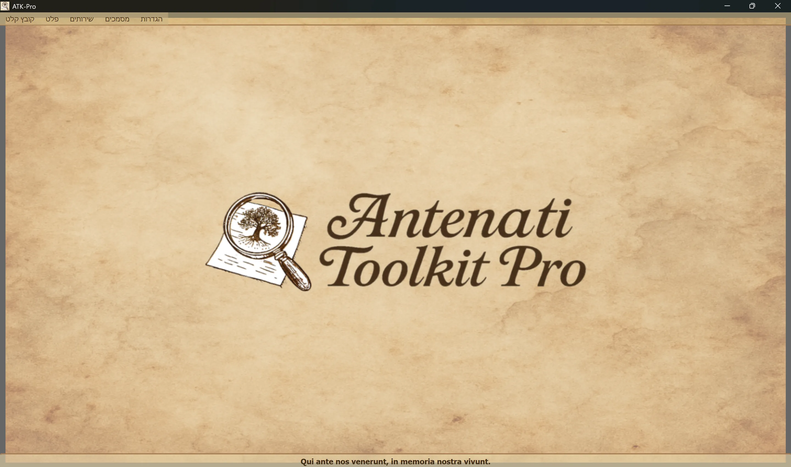

────────────────────────────────────────────────────────────────────────────────
Windows
ATK-Pro-Setup-vx.x.x.exe דף השחרור הרשמיLinux
ATK-Pro-vx.x.x.deb (Debian/Ubuntu) או .tar.gz דף השחרורsudo dpkg -i ATK-Pro-vx.x.x.deb לחץ כפול ב Nautilus/Files./ATK-Pro מתוך תיקיה מופקתmacOS
ATK-Pro-vx.x.x.dmg דף השחרורWindows
C:\Program Files\ATK-Pro\C:\Users\[TuoNome]\Documents\ATK-Pro\output\C:\Users\[TuoNome]\Documents\ATK-Pro\input\Linux
/opt/ATK-Pro/ (deb) או תיקיה מופקת (.tar.gz)~/Documents/ATK-Pro/output/~/Documents/ATK-Pro/input/macOS
/Applications/ATK-Pro.app~/Documents/ATK-Pro/output/~/Documents/ATK-Pro/input/────────────────────────────────────────────────────────────────────────────────
השפות הזמינות הן:
עם זאת, על פי הנתונים הזמינים בסוף שנת 2025, מעריכים כי ניתן לכסות כ- 98% מהצאצאים מאיטלקים וקהילות איטלקיות או איטלקיות ברחבי העולם.
כאשר אתה מפעיל לראשונה, התוכנית יוצרת באופן אוטומטי את התיקיות הבאות:
C:\Users\[TuoNome]\Documents\ATK-Pro\output\C:\Users\[TuoNome]\Documents\ATK-Pro\output\doc\ (מסמכים מוגדרים)C:\Users\[TuoNome]\Documents\ATK-Pro\output\reg\ (רישום הגנה)~/Documents/ATK-Pro/output/input\ אנלוגיה (אופציונלית, עבור קלט קובץ)בעוד עיבוד תיקיות זמניות נוצרות עבור אריח מופחת (tiles_canvas_X/(ואם נדרש, PDF, קבצים זמניים לדור שלה.
כל התיקיות והקבצים זמניים נמחקים באופן אוטומטי בסוף העיבוד.
רק קבצים סופיים מעובדים נשארים (תמונות בפורמטים נבחרים, PDF, ביטויים ומטא-נתונים).
כדי לשנות את תיקיות הפלט להשתמש בהגדרות "Select פלט תיקיות". הבחירות מאוחסנות ושוחזרות באופן אוטומטי לפגישה הבאה.
הפקודה פרופיל משאבים מווסת את המקבילה בשימוש במהלך הורדה, שחזור תמונות ודור של PDF:
הפרופיל אינו משנה את האיכות, זכויות או כמות המסמכים שנרכשו. הגבולות המיוחדים של פורטל ממשיכים להיות precedence.
────────────────────────────────────────────────────────────────────────────────
החלון הראשי של Antenati Toolkit Pro יש מבנה פשוט ואינטואיטיבי.

המוטו הלטיני "Qui ante nos venerunt, לזכר הוווט שלנו", נזכר בחשיבות השורשים והזיכרון הקולקטיבי.
בראש החלון, מתחת לראש:
[מקור] [Output] [שירותים] [סעיפים] [הגדרות]
כל תפריט מכיל כפתורים ספציפיים ואפשרויות (ראה סעיף הבא).
נהל את הטעינה של רשומות IIIF:
├─ Esempio input
│ └─ Visualizza il file di esempio (mostra formato coppie: modalità D/R + URL)
├─ Apri input
│ └─ Seleziona un file .txt con i tuoi record IIIF
│ (Deve contenere coppie: modalità D/R su riga 1, URL su riga 2)
└─ Modifica input
└─ Modifica il file input attualmente caricato
(Aggiungi/rimuovi record, cambia URL, salva modifiche)
ניהול עיבוד ופלט:
├─ Elabora │ └─ Avvia il download, la ricostruzione e il salvataggio delle immagini │ (Mostra finestra di progresso in tempo reale) ├─ Apri cartella output │ └─ Apre in Esplora Risorse la cartella con i file elaborati └─ Visualizza elaborazioni precedenti └─ Lista dei record già elaborati
רשימת השירותים המשולבים:
├─ Ricerca assistita AI │ └─ Suggerisce portali, piste di ricerca e query genealogiche da verificare ├─ Visualizzazione Immagini │ └─ Viewer immagini scaricate e/o PDF generati ├─ Visualizzazione Metadati JSON │ └─ JSON originali e metadati (genealogici, tecnici, EXIF) ├─ OCR Avanzato │ └─ Testi manoscritti ottocenteschi, latino ecclesiastico, tardo-medievali ├─ Traduzione OCR │ └─ Traduzione automatica testi estratti nelle lingue selezionate └─ Esportazione GEDCOM └─ GEDCOM, Gramps, Family Tree Maker, Ancestry, MyHeritage, WikiTree, etc.
גישה למקורות ולתיעוד:
├─ Disclaimer - Clausole legali e termini d'uso ├─ Presentazione autore - Background dell'autore del progetto ├─ Presentazione progetto - Storia, motivazioni, roadmap di ATK-Pro ├─ Guida - Indice principale della guida modulare └─ Informazioni - Versione, copyright, email di contatto
תצורה כללית של התוכנית:
├─ Cambia lingua
│ └─ Seleziona la lingua dell'interfaccia (richiede riavvio)
├─ Seleziona formati immagine
│ └─ Scegli tra PNG, JPG, TIFF e PDF (almeno 1 obbligatorio)
│ PDF può essere selezionato da solo o insieme ai formati immagine
│ La scelta viene memorizzata e pre-selezionata automaticamente alla sessione successiva
├─ Seleziona cartelle output
│ └─ Apre prima la scelta della modalità cartelle, poi le finestre di selezione:
│ • Cartella unica per tutti → una sola cartella per documenti e registri
│ • Cartelle separate doc/reg → una cartella per tutti i doc, una per tutti i reg
│ • Cartella per ogni record → una cartella distinta per ciascun record
│ La modalità e le cartelle vengono memorizzate e ripristinate alla sessione successiva
├─ Esporta configurazione
│ └─ Salva le impostazioni attuali in un file
├─ Importa configurazione
│ └─ Carica un file di impostazioni precedentemente salvato (ripristina tutte le preferenze e percorsi)
├─ Verifica aggiornamenti
│ └─ Controlla la disponibilità di nuove versioni del programma
└─ Chiudi
└─ Termina il programma (mostra banner di supporto PayPal.me)
────────────────────────────────────────────────────────────────────────────────
ATK-Pro זמין ב-20 שפות:
שפה יכולה להשתנות בכל עת באמצעות תפריט הגדרות - שינוי שפה.
התוכנית דורשת חזרה ליישם את השפה החדשה.
בעת הפעלה מחדש, התוכנית מדגישה באופן אוטומטי את השפה שנבחרה חדשה.
שינוי השפה מתורגם:
אם מודל ברירת המחדל יוצא משימוש או אינו זמין עוד, ATK-Pro בודק את הקטלוג הגלוי לאישורים, בוחר מודל כללי התואם לפונקציה ולתמונות בעת הצורך ומנסה עד שלוש חלופות. מנגנון הגיבוי אינו מופעל בשגיאות מכסה, רשת או אימות.
עקיפת מודל: מודל שהוזן ידנית נשאר מחייב ולעולם אינו מוחלף אוטומטית.